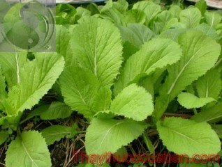

Tên khác:
Tên thường gọi: Cải xanh, Cải bẹ xanh, Cải canh, Cải cay
Tên khoa học: - Brassica juncea (L.) Czern. et Coss
Họ khoa học: thuộc họ Cải - Brassicaceae.
Cây cải xanh
(Mô tả, hình ảnh cây cải xanh, phân bố, thu hái, thành phần hóa học, tác dụng dược lý...)

Mô tả:
Cây cải xanh không chỉ là loại rau ăn quen thuộc mà còn là một cây thuốc quý. Cải xanh dạng cây thảo hằng năm, hoàn toàn nhẵn, cao 40-60cm hay hơn, rễ trụ ít phân nhánh. Lá mọc từ gốc, hình trái xoan, tù, có cuống lá có cánh với 1-2 cặp tai lá; phiến dài tới 1m, rộng 60cm, hơi hay có răng không đều; các lá ở thân tiêu giảm hơn; các lá phía trên hình dải - ngọn giáo dài 5cm, rộng 5-10mm. Hoa vàng nhạt, khá lớn, cao 1,5cm, xếp thành chùm dạng ngù. Quả cải 35mm, tận cùng bởi một mũi nhọn, dài 4-5mm, mở thành các van lồi, có đường gân giữa rõ. Hạt hình cầu, có mạng màu đen đen, dài 2mm. Có nhiều thứ khác nhau.
Mùa hoa tháng 3-6.
Nơi sống và thu hái:
Cây của châu Á nhiệt đới và cận nhiệt đới, có nhiều ở vùng Trung Á. Ở nước ta, Cải xanh được trồng rất phổ biến khắp cả nước làm rau ăn. Cây chịu được nóng mưa. Có thể trồng quanh năm, trừ những tháng nóng và mưa nhiều. Ở miền Bắc Việt Nam có hai vụ: - Vụ chiêm tháng 2-6, gieo 30-35 ngày thì được thu hoạch; - Vụ mùa tháng 8-11, gieo 20-25 ngày thì nhổ cấy, 30-35 ngày sau ăn được.
Bộ phận dùng làm thuốc: Lá và hạt
Thành phần hóa học
Hạt cải canh chứa dầu béo 30 - 38%, tinh dầu 2 - 9%, chất nhầy
Dầu béo có tỷ trọng 0,995, nD 1,5185, alphaD + 0° 12’, chứa nhiều acid béo như acid erucic. acid eicosenoic, acid behenic, acid sinapic, acid arachidic, ít sinapin (ester của cholin và acid sinapic hoặc acid hydroxydimethoxycinamic), protid có trọng lượng phân tử 22900, 13000, brassicasterol, 22 - dehydrocampesterol, nhiều enzym (thioglucosidase, sulfatase, isomerase mà hỗn hợp gọi là myrosinase).
Hoạt chất là sinigrosid 0,5 - 2%. nếu đem thủy phân bằng enzym (myrosinase) sẽ cho glucose, sulfat acid của K và alyl isothiacyanat (còn gọi là "tinh dầu" rnù - tạc). Đây là chất lỏng dạng dầu, dễ bay hơi, không màu, gây chảy nước mắt, tạo ra alylihiourê với amoni hydroxyd.
Ngoài alyl isothiocyanat, hạt còn có crotonyl isothicyanat. (The Wealth of India I, 1948, Trung dược tử hải II, 1996, Trung dược đại từ điển I, 1997, Abrégé de matière médicale, 1981.)
Cải canh dùng để muối dưa trong đó có protid, lipid, đường, celulose, caroten, acid nicotinic, vitamin C, các nguyên tố Ca, P, Fe (Trung dược từ hải II, 1996).
Lá chứa 4 - decanol có tính chất kháng đột biến (CA 121: 124. 701 r).
Lá còn có acid amin 8%, chủ yếu là acid glutamic và acid aspartic (CA 119: 137.967 r).
Tác dụng dược lý:
Tác dụng kích thích. Chất sinigrin không có tác dụng kích thích, nhưng sau khi gặp nước dưới tác dụng của men myrosin (sẵn có trong hạt) cho tinh dầu mà thành phần chủ yếu là allyl isothiocyanat, chát này có tác dụng kích thích mạnh. Dùng trực tiếp lên da gây cảm giác nóng, làm cho da đỏ, gây phồng rộp da, phỏng mụn nước. Thông thường, bột hạt cải được loại bỏ thành phần dầu béo, chế thành cao dán dùng ngoài làm thuốc kích thích cục bộ. Còn trong thực phẩm, bột hạt cải canh được chế thành mù tạc dùng làm chất điều vị. Với liều vừa phải, mù tạc có tác dụng tăng cường sự phân tiết dịch vị và hoạt tính của men amylase, làm giảm nhịp tim và có tác dụng chống nấc. Liều lớn mù tạc lại kích thích mạnh dạ dày - ruột, gây nôn mửa.
Các tác dụng khác. Thí nghiệm trên chuột lang, cho chuột chế độ ăn có hạt cải canh thì xuất hiện tác dụng ức chế tuyến giáp trạng thu nạp I131 và làm cho SCN trong máu tăng cao. Cũng có báo cáo cho rằng động vật được nuôi dài ngày bằng hạt cải canh thì tuyến giáp trạng phình to có thể là do thyrotropin phân tiết quá nhiều. Trên thỏ tiêm tĩnh mạch dịch ngâm hạt cải canh, ban đầu xuất hiện huyết áp tăng nhẹ, sau đó hạ thấp đồng thời tăng biên độ hô hấp. Cho chuột cống ăn lá cải canh thấy có tác dụng hạ đường huyết, nồng độ glycogen ở gan tăng.
Độc tính: Dầu hạt cải canh hoặc cao dán của hạt dùng trực tiếp với da. nếu để thời gian quá dài hoặc dùng nồng độ quá cao thì gây phồng mụn nước thậm chí mạn mủ và ngay lúc đó ngừng dùng thuốc thì mụn mủ vẫn lành rất chậm vì khi đó dầu hạt cải đã ngấm qua da và tác dụng của thuốc vẫn tiếp tục. Đối với niêm mạc, dầu hạt cải canh kích thích rất mạnh, dùng dung dịch 15% nhỏ vào mắt thỏ, thì lập tức niêm mạc bị sưng phù.
Vị thuốc cải xanh
(Công dụng, liều dùng, tính vị, quy kinh...)
Tính vị, tác dụng:
Trong y học Đông Phương, người ta cho biết hạt Cải xanh có vị cay đắng, tính ấm, có tác dụng thông khiếu, an thần, tiêu hoá đờm thấp, tiêu thũng, giảm đau.
Quy kinh:
Vào kinh thủ thái âm
Thân và lá cải canh có tác dụng tuyên phế hóa đờm, ôn trung lợi khí.
Công dụng, chỉ định và phối hợp:
Dùng Chữa ho hen, làm tan khí trệ, chữa kết hạch, đơn độc sưng tấy.
Dưa cải là món ăn thông thường. Có thể dùng ăn sống chấm với nước thịt kho, cá kho, nước mắm, nấu canh với thịt, với cá, tép, tôm, chưng cá, xắt nhuyễn chưng với trứng vịt, hay kho với lòng lợn, nước tương, kho với thịt vv... Dưa cải có thể muối ăn liền (muối xổi), chọn cây có ngồng, cắt khúc, phơi héo rồi muối trong 1-2 ngày để ăn; hoặc muối dưa để lâu (phải để nguyên cây phơi héo rồi muối vào khạp để ăn trong 2-3 tháng).
Cải xanh là loại rau lợi tiểu. Hạt cải có hình dạng, tính chất và công dụng như hạt Mù tạc đen của châu Âu. Người ta cũng ép hạt lấy dầu (tỷ lệ 20%) chế mù tạc làm gia vị và dùng trong công nghiệp.
Liều dùng:
Dùng tươi làm rau ăn hàng ngày 200-300g
Ứng dụng lâm sàng của vị thuốc cải xanh
Chữa ho hen, đờm suyễn ở người già.
Hạt Cải xanh, hạt Củ cải, hạt Tía tô, mỗi vị 8-12g, sắc uống hay tán bột uống mỗi lần 4-5gel, ngày uống 2-3 lần.
Viêm khí quản:
Hạt Cải xanh (sao) 6g, hạt Cải củ (sao) 10g, hạt Cải bẹ (sao) 10g, nước 600ml, sắc còn 300ml, chia ba lần uống trong ngày.
Đơn độc sưng tấy:
Hạt Cải xanh tán nhỏ, trộn giấm, làm cao dán, đắp ngoài…
Chữa lao hạch:
Hạt cải canh nghiền thành bột trộn với hành đã giã nát, 2 vị lượng bằng nhau, đắp tại chỗ, mỗi ngày thay một lần.
Chữa dạ dày lạnh đau, nôn ra thức ân:
Bột hạt cải canh 3,5g uống với rượu hâm nóng. Ngày 2 lần.
Chữa đơn độc sưng tấy:
Hạt cải canh giã nhỏ, trộn với giấm chế thành cao dán đắp ngoài.
Chữa đau khớp:
Hạt cải canh nghiền thành bột, cho thêm bột mì trộn đều, đắp vào chỗ đau đến khi có cảm giác tê là được.
Thanh nhiệt:
Trong đông y, tất cả các loại cây màu xanh nào cũng đều có tác dụng thanh nhiệt, riêng cải bẹ xanh có tác dụng thanh nhiệt gấp đôi, nhất là vào mùa nóng, có thể nấu lên lấy nước uống có tác dụng thanh nhiệt.
Tham khảo
Kiêng kị:
Người suy tuyến giáp thì không nên sử dụng cải bẹ xanh.
Ghi chú:
Ta còn trồng loài Cải xanh nhỏ - Brassica cernua Forbes et Hemsl., có lá nhỏ hơn, có khuyết, mép có răng cao, cuống lá nhỏ tròn; hoa vàng; quả hình trụ tròn, ngắn hơi dẹt; hạt rất nhiều. Trong lá tươi có acid oxalic và calcium. Người ta dùng lá cải xanh nhỏ chữa lỵ, làm toát mồ hôi và nước sắc hạt trị đau thắt lưng, ho và chứng khó tiêu.
Tag: cay cai xanh, vi thuoc cai xanh, cong dung cai xanh, Hinh anh cay cai xanh, Tac dung cai xanh, Thuoc nam
Tag: cay cai xanh , vi thuoc cai xanh , cong dung cai xanh , Hinh anh cay cai xanh , Tac dung cai xanh , Thuoc nam
Thaythuoccuaban.com Tổng hợp
*************************